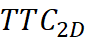
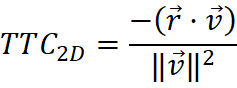
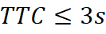
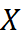
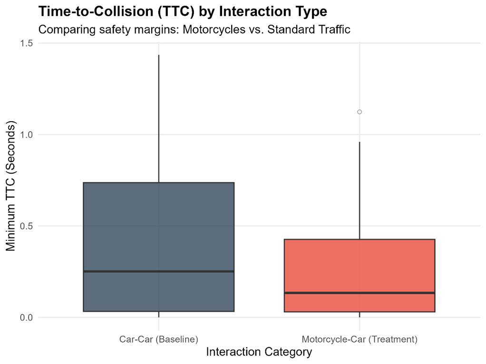
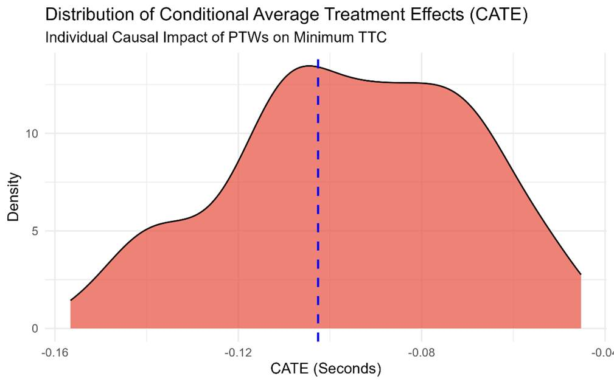
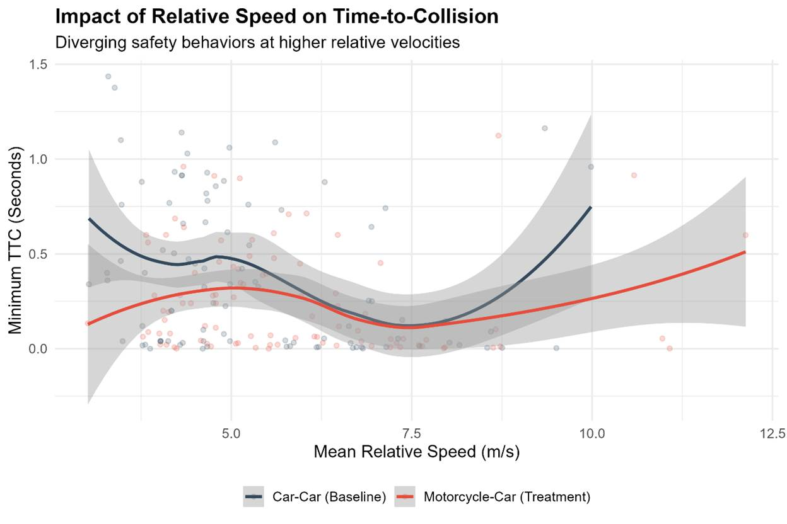
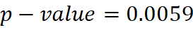

A Causal Evaluation of the Impact of Motorcycles on the Severity of
Traffic Near-Misses Using Causal Machine Learning and Massive Drone Trajectory
Data
Abstract
The management
of mixed traffic flows remains a fundamental challenge in traffic engineering
due to the heterogeneous dynamic characteristics of vehicles. Previous studies
have heavily relied on correlation-based statistical models, which face severe
limitations in isolating causal effects from confounding variables. This study
develops a Causal Machine Learning framework based on the Causal Forest
algorithm to evaluate the isolated impact of Power-Two-Wheelers (PTWs) on the
"Time-to-Collision" ( 
Keywords: Traffic
Safety, 2D Time-to-Collision, Causal Inference, Causal Forest, Mahalanobis Matching, Rosenbaum Bounds.
1. Introduction
Ensuring the
safety of urban road networks and reducing crash rates has consistently been a
primary concern in transportation engineering. In dense urban environments, the
presence of Power-Two-Wheelers (PTWs) significantly complicates the dynamics of
mixed traffic flows. Due to their smaller physical dimensions, rapid
acceleration capabilities, and aggressive driving behaviors such as
lane-splitting, motorcycles not only face higher collision risks but also
introduce turbulence into the behavior of adjacent drivers (Vlahogianni
et al., 2012).
Traditionally,
traffic safety analysis has been conducted using historical crash records.
However, the rare, random, and frequently under-reported nature of these events
has driven researchers toward Surrogate Safety Measures (SSM) (Tarko, 2018). Among these, the
"Time-to-Collision" (TTC) index is widely accepted as the most
reliable indicator for assessing the severity of traffic conflicts.
The
primary challenge in analyzing the TTC index lies in disentangling the true,
inherent effect of a specific factor (e.g., the presence of a motorcycle) from
other kinematic variables, such as higher relative speeds. Moving beyond
traditional correlation approaches and adopting "Causal Inference"
models is inevitable for robust microscopic traffic analysis. This research
addresses this gap by deploying a Causal Machine Learning pipeline on
high-resolution trajectory big data to evaluate the isolated physical impact of
motorcycles on traffic safety margins.
2. Literature
Review
A substantial
portion of safety studies has utilized statistical regression models, such as
Logit and Probit, to identify factors influencing crash severity. With the
advent of massive trajectory data and drone-based databases like pNEUMA, it became possible to extract interactions at the
millisecond level (Barmpounakis & Geroliminis, 2020).
Despite
these advancements, microscopic analyses often suffer from "Selection
Bias" and "Perfect Separation." Previous studies have struggled
to fully control for confounding variables, such as initial differences in
relative speed, when comparing PTWs with passenger cars, especially without the
interference of sensor tracking noise. This research bridges this
methodological gap by combining massive trajectory data, continuous temporal
filters (Run-Length Encoding), the novel "Causal Forest" approach,
and Mahalanobis distance matching to provide a
mathematically and physically rigorous causal evaluation.
3. Methodology
3.1. Database
Description and Big Data Preparation
The data
utilized in this study was extracted from the pNEUMA
traffic database, which includes precise vehicle trajectories in the urban
network of Athens with a temporal resolution of 0.04 seconds. To implement
causal inference models while maintaining time-series integrity, over 1.5
million trajectory records were processed to extract interacting vehicle pairs
(Car-Car as the control group and Car-PTW as the treatment group)
frame-by-frame.
3.2. 2D
Kinematics and Pure Near-Miss Extraction
Given the
lateral movement characteristics of motorcycles, one-dimensional calculations
lack physical validity. Since the data possessed Cartesian coordinates (UTM),
the physical distance between two vehicles was calculated using the 2D
Euclidean formula:
Furthermore,
the 2D Time-to-Collision () was computed
using the dot product of the relative velocity () and relative
position () vectors. This
index was only considered valid under conditions of physical convergence ():

To
completely eliminate sensor tracking noise and identify absolute near-misses, a
rolling window filter was applied. Accordingly, interactions were only retained
if the critical condition ( 
3.3. Causal
Machine Learning (Causal Forest) and Mahalanobis
Matching
To estimate the
Average Treatment Effect (ATE), the advanced Generalized Random Forests (Causal
Forest) algorithm was utilized. The treatment variable () was the
presence of a motorcycle, the outcome variable () was the
minimum , and the
confounders ( 
Additionally,
to overcome the bias of heterogeneous distributions and enable sensitivity
testing, "Mahalanobis Distance Matching"
was employed to extract interacting pairs with strictly equivalent kinematic
conditions.
4.
Results
4.1. Causal
Inference and CATE Analysis
Following the
processing of 1.5 million records and kinematic isolation, descriptive
statistics of the critical traffic events were extracted. The results are
summarized in Table 1:
Table 1. Descriptive statistics of kinematic variables for pure
critical near-miss events (N=91 per group).
|
Interaction Type |
N (Events) |
Mean TTC (s) |
SD TTC (s) |
Mean Relative Speed (m/s) |
SD Relative Speed (m/s) |
Mean Initial Distance (m) |
|
Car - Car (Control) |
91 |
0.39 |
0.4 |
5.34 |
1.61 |
12.82 |
|
Motorcycle - Car (Treatment) |
91 |
0.25 |
0.27 |
5.8 |
1.76 |
13.13 |
The
results of the Causal Forest algorithm demonstrated that the presence of a
motorcycle, under similar kinematic conditions, exerts a negative causal effect
on the TTC index. The model estimates that PTWs reduce the safety margin by an
average of -0.1026 seconds (ATE = -0.1026s). Feature importance analysis
within the algorithm revealed that initial distance (37.0%) and relative speed
(33.0%) play the most significant roles in determining conflict severity.
The
boxplots (Figure 1) and the distribution of Conditional Average Treatment
Effects (Figure 2) illustrate the behavioral differences in safety margins and
the heterogeneous impact of the treatment, respectively.

Figure 1. Distribution of Time-to-Collision (TTC) values in
isolated critical events.

Figure 2. Distribution of Conditional Average Treatment Effects
(CATE) estimated by the Causal Forest.
The
scatter plot (Figure 3) confirms that in pure Car-Car interactions, drivers
attempt to compensate for safety as relative speed increases; however, in
motorcycle interactions, the safety margin remains dangerously close to zero
across various speeds.

Figure 3. Impact of relative speed on Time-to-Collision degradation
across interaction types.
4.2.
Rosenbaum Bounds Sensitivity Analysis
To prove the
model's resilience against unobserved confounders (e.g., weather conditions or
driver psychological states), the Rosenbaum Bounds test was implemented. The
results of the one-sided Wilcoxon test indicated that at the baseline (without
hidden variables), the causal inference is statistically highly significant ( 
Moreover,
the developed causal model is so robust that even if an unobserved variable
increased the odds of exposure to the high-risk group by a factor of 3 (), the study's
conclusions would retain their statistical validity and significance.
5. Conclusion
In this study,
a Causal Machine Learning framework based on the Causal Forest algorithm and pNEUMA trajectory big data was developed to evaluate the
isolated impact of Power-Two-Wheelers on traffic safety. By applying strict
temporal filters (25-frame rolling window) and utilizing 2D Euclidean
kinematics, 91 pure, noise-free near-miss events were identified.
The
causal modeling findings proved that the presence of motorcycles inherently
degrades the safety margin of traffic flows, causing a 0.1026-second reduction
in the Time-to-Collision index, even when initial speed and distance variables
are rigorously controlled. Furthermore, the overall mean TTC in the most
critical events drops from 0.39 seconds for cars to 0.25 seconds for
motorcycles, representing a severe reduction in available reaction time.
The
high robustness of these results in the Rosenbaum Bounds sensitivity analysis
confirms that the hazard posed by motorcycles is an inherent phenomenon
resulting from their maneuverability and dynamic capabilities, rather than
merely hidden environmental variables. These findings justify and mandate the
adoption of modern engineering approaches, such as the development of
segregated lanes and the revision of geometric design guidelines for
mixed-traffic roadways.
References
Barmpounakis, E., & Geroliminis, N. (2020). On
the new era of urban traffic monitoring with massive drone data: The pNEUMA large-scale field experiment. Transportation
Research Part C: Emerging Technologies.
Rosenbaum, P. R., & Rubin, D. B. (1983). The central role of
the propensity score in observational studies for causal effects. Biometrika.
Tarko, A. P. (2018). Surrogate measures of safety. In Safe Mobility:
Challenges, Methodology and Solutions. Emerald Publishing Limited.
Vlahogianni, E. I., Yannis, G., & Golias, J. C. (2012). Overview of
critical risk factors in Power-Two-Wheelers safety. Accident
Analysis & Prevention.
Zheng, L., Ismail, K., & Meng, X. (2014). Traffic conflict
techniques for road safety analysis: open questions and some insights. Canadian
Journal of Civil Engineering.